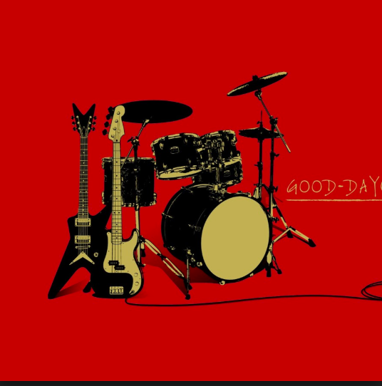

"Youtuber"ってどうやってモノになるの？
世の中には様々な"youtuber"が存在しています。
しかしそこで成功者と言われるのはほんの一握りの有名youtuberだけ
どうやったら彼らのように”バズる”ことができるのか
当サイトのカテゴリの中にそのヒントが見つかれば幸いです。
チャンネル登録者数
チャンネル登録者数が多い人を表示します。
チャンネル登録急上昇中
チャンネル登録者数がここ数ヶ月で急上昇しているアカウントを表示します。
動画高評価
動画が高評価を得ているアカウントを掲載します。

動画再生回数
公開している動画の再生回数が多いアカウントを表示しています。
炎上・登録者数減少ランキング
何らかの理由で炎上したり登録者数が激減した人々を挙げています。